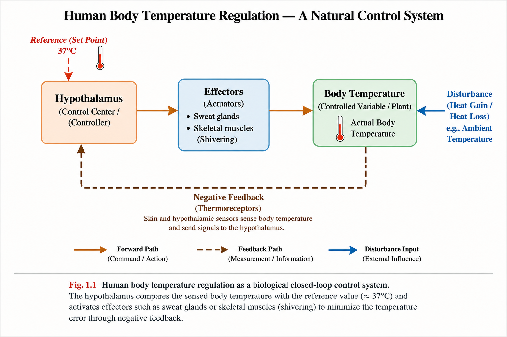
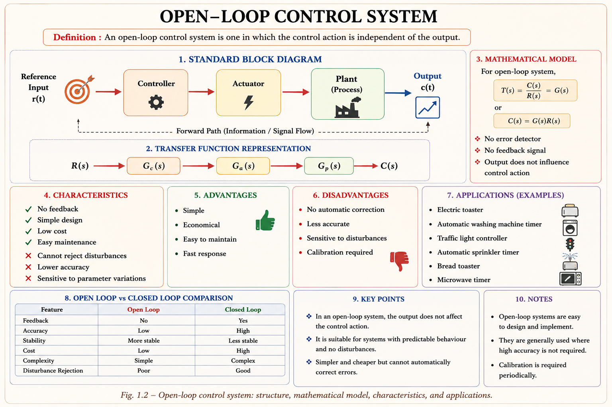
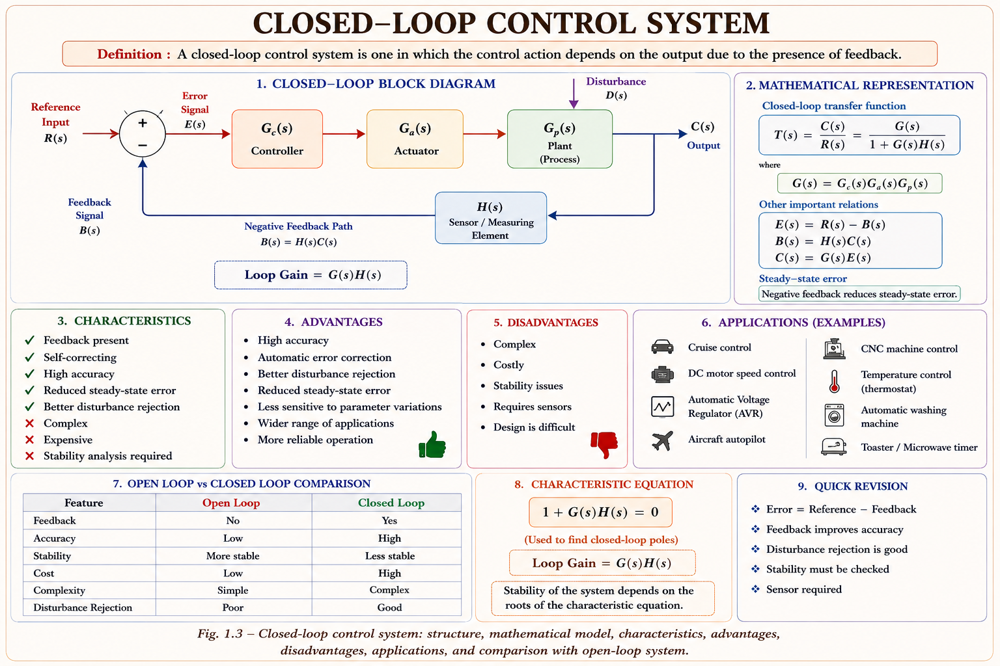

Open-loop and closed-loop systems, the building blocks of every controller, how feedback shapes behaviour, and where control theory quietly runs the machines around you — the foundation for every chapter that follows in this series.
Every engineered process needs its output to behave the way we want, even when the world keeps pushing back — the load changes, the supply voltage sags, friction varies with temperature. A control system is the arrangement of components that forces a process to follow a desired behaviour despite these disturbances. It is the mathematics and hardware that stand between "what we want" and "what actually happens."
Control theory does not belong to one branch. The same block-diagram thinking governs a room thermostat, a satellite's attitude control, a synchronous generator's automatic voltage regulator (AVR), and a robot arm's joint controller. Once you understand the loop, you understand all of them.

Formally, a control system is defined as an interconnection of components arranged so that the system's output is regulated to a desired value by comparing it, directly or indirectly, against a reference. The two broad families that this chapter builds are open-loop systems (no comparison) and closed-loop systems (continuous comparison via feedback) — every later chapter in this series, from block diagrams to compensator design, is built on this single distinction.
An open-loop control system is one in which the control action is completely independent of the output. The controller acts on the process purely based on the reference input (and possibly a pre-calibrated model), and never checks whether the desired output was actually achieved.

| System | Input | Why It's Open-Loop |
|---|---|---|
| Electric toaster | Timer knob setting | Toasts for a fixed time regardless of actual bread darkness |
| Washing machine (basic) | Cycle/timer selection | Runs a pre-set wash sequence, does not sense cleanliness |
| Traffic light (fixed-time) | Pre-programmed timing | Switches phases on a clock, ignores actual traffic density |
| Stepper-motor positioning | Number of step pulses | Assumes every pulse produces exact rotation, no position sensor |
What if a disturbance enters the plant? In an open-loop system, since there is no measurement path back from the output, a disturbance (e.g., a sudden load torque on a motor) changes the output permanently — the controller has no way of knowing anything went wrong.
A closed-loop control system uses a measurement of the actual output, compares it with the reference input, and uses the resulting error signal to drive the plant until the error is driven to zero (or an acceptably small value). This measurement-and-correction path is called the feedback path.

| System | Sensed Output | Corrective Action |
|---|---|---|
| Room air conditioner | Room temperature | Compressor cycles on/off to hold set temperature |
| Automatic Voltage Regulator (AVR) | Generator terminal voltage | Adjusts exciter field current |
| Automobile cruise control | Vehicle speed | Throttle position adjusted |
| Servo position control | Shaft angle (via potentiometer/encoder) | Motor torque driven until angle error → 0 |
| Property | Open-Loop | Closed-Loop |
|---|---|---|
| Feedback | Absent | Present |
| Accuracy | Low, depends on calibration | High, self-correcting |
| Effect of disturbance | Cannot be corrected | Reduced by feedback loop |
| Sensitivity to parameter change | High | Reduced |
| Stability | Generally stable | Can become unstable if not designed well |
| Cost & complexity | Low | Higher — needs sensors, comparator |
| Bandwidth | Not applicable | Can be increased by feedback |
Feedback is negative when the feedback signal is subtracted from the reference (used to reduce error — the normal case in control engineering) and positive when it is added (used deliberately in oscillators, but generally avoided in control loops since it can drive the system towards instability).
Regardless of application, almost every closed-loop control system can be broken down into the same handful of functional blocks. Recognising these blocks in any new system — a lift, a CNC machine, a power-plant boiler — is the single most useful skill this chapter can give you.
| Component | Function | Typical Example |
|---|---|---|
| Reference Input | Desired value the output should track | Thermostat set-point, speed dial |
| Error Detector (Comparator) | Computes e(t) = r(t) − b(t) | Differential amplifier, summing junction |
| Controller | Processes error into a control signal (P, PI, PID law) | PID controller, PLC logic |
| Actuator | Converts control signal into physical action | DC motor, hydraulic valve, relay |
| Plant / Process | The physical system being controlled | Furnace, aircraft, generator |
| Sensor / Transducer | Converts output into a feedback-comparable signal | Thermocouple, tachogenerator, encoder |
| Feedback Path | Carries the sensed signal back to the comparator | Wiring, wireless telemetry |
Remove the sensor and you are back to open-loop. Remove the controller and the raw error signal drives the actuator directly — usually far too aggressively. Remove the actuator and the controller has no way to influence a physical plant. Every block earns its place.
A servomechanism is a closed-loop system in which the controlled variable is mechanical position, velocity, or acceleration. Consider an antenna-positioning servo used to track a satellite:
Beyond the open-loop/closed-loop split, control systems are classified along several independent axes. GATE and IES frequently test whether you can correctly place a given system into each category.
| Classification | Category A | Category B |
|---|---|---|
| Linearity | Linear — superposition & homogeneity hold | Non-linear — saturation, backlash, dead-zone present |
| Time dependence of parameters | Time-Invariant (LTI) — parameters constant with time | Time-Variant — parameters change with time (e.g., missile fuel mass) |
| Signal nature | Continuous-time — signals defined at every instant | Discrete-time / Digital — signals defined at sampling instants |
| Number of I/O channels | SISO — Single Input Single Output | MIMO — Multiple Input Multiple Output |
| Feedback presence | Open-loop | Closed-loop |
A system can be closed-loop and still non-linear (most real actuators saturate). Students often assume "feedback = linear, well-behaved" — this is false. Feedback and linearity are two completely independent classifications.
Control theory is not an isolated subject — it is the glue between almost every branch you have studied so far. Five representative applications:
Feedback is powerful precisely because it trades one problem for another — and understanding that trade is central to every later chapter on stability and compensator design.
This single expression — derived formally in Chapter 2 (Block Diagrams & Signal Flow Graphs) — explains almost everything about feedback. When the loop gain G(s)H(s) is large, the overall gain becomes almost independent of G(s), which is exactly why feedback reduces sensitivity to parameter drift. It is also the same denominator, 1 + G(s)H(s), whose roots determine whether the closed loop is stable.
If G(s)H(s) ≫ 1, then C(s)/R(s) ≈ 1/H(s) — the closed-loop behaviour depends mainly on the feedback element H(s), not on the (often less predictable) forward path G(s). Design a good sensor, and the rest of the loop's imperfections matter far less.
False. Feedback can just as easily destabilise a marginally stable open-loop plant if the loop gain and phase are not designed carefully. Stability with feedback must always be checked, never assumed.
False. Open-loop systems are typically stable if the plant itself is stable — they simply cannot correct for disturbances or parameter drift. Stability and accuracy are separate properties.
Negative feedback means the loop is designed so the error reduces the deviation; positive feedback reinforces it. This is a property of the loop's overall sign, not merely which input port the arrow is drawn into.
(a) Open-loop — runs for the set time; does not sense food temperature.
(b) Closed-loop — bimetallic strip senses temperature and breaks/completes the heating circuit.
(c) Closed-loop — LDR senses ambient light level and switches the lamp accordingly.
(d) Open-loop (with respect to speed) — the driver's arm forms the actual feedback loop, but the mechanical gear system itself does not sense road speed.
(e) Closed-loop — vehicle speed is sensed and compared against the set speed continuously.
Step 1 — Apply the standard feedback formula:
Step 2 — Repeat with G increased by 20% (G = 12):
Step 3 — Compare the percentage change:
A 20% change in the forward-path gain G produced only a ≈2.8% change in the overall closed-loop gain. This is feedback's sensitivity-reduction property in action — the exact mechanism explored analytically in later chapters.
The timer-based machine applies a fixed wash duration regardless of how dirty the clothes actually are — it has no way to measure the achieved cleanliness and therefore cannot adjust. Two loads with very different soil levels receive an identical wash cycle.
A closed-loop version would continuously sense a proxy for cleanliness (e.g., turbidity of the wash water) and extend or shorten the cycle until that measured signal crosses a threshold — the wash duration becomes load-dependent rather than fixed, exactly the disturbance-rejection behaviour a feedback loop provides.
This introductory topic itself is rarely asked as a standalone numerical, but its concepts (open vs closed loop, feedback properties, component identification) appear embedded inside 1–2 mark conceptual questions across almost every GATE EE paper. 🟢 High Probability for concept-based questions; 🔴 Low Probability for standalone numericals at this stage.
The fundamental difference between an open-loop and a closed-loop control system is that a closed-loop system:
Explanation: The defining feature is the presence of a feedback path that continuously compares the actual output with the desired reference and generates a corrective error signal. Cost, linearity and stability are separate, independent properties.
Negative feedback in a control system, when loop gain G(s)H(s) is large, primarily results in:
Explanation: From C(s)/R(s) = G/(1+GH), when GH ≫ 1 the closed-loop gain approaches 1/H and becomes largely independent of variations in G — this is the sensitivity- reduction property. Stability is a separate consideration and is not automatically guaranteed by feedback (option D is a common trap).
In a room-temperature control system using a thermostat-controlled heater, the component that plays the role of the "sensor / feedback element" is:
Explanation: The heater is the actuator, the set-point dial provides the reference input, and the room is the plant. The bimetallic strip (or equivalent sensor) measures the actual temperature and feeds it back for comparison — that is the feedback element by definition.
Controller → Actuator → System (Plant) → Pickoff (Sensor). Follow the signal in this order from reference input to feedback, and you will never forget a block when sketching a control loop from scratch.
Have a question on open-loop vs closed-loop systems, feedback, or control system components? Type below or pick a suggestion.
No feedback path. Control action independent of output. Simple, cheap, but cannot correct for disturbances or parameter drift. Examples: toaster, fixed-time traffic light.
Output measured and compared to reference; error drives correction. More accurate, disturbance- rejecting, but can become unstable if loop gain/phase mis-designed.
Reference input → Error detector → Controller → Actuator → Plant → Sensor → back to error detector. Mnemonic: CASP (Controller, Actuator, System, Pickoff).
Linear/Non-linear, Time-Invariant/Time-Variant, Continuous/Discrete, SISO/MIMO — all independent of the open-loop/closed-loop split.
C(s)/R(s) = G/(1+GH) for negative feedback. Large loop gain GH → overall response ≈ 1/H, largely independent of G. Full derivation in Chapter 2.
Feedback buys accuracy and disturbance rejection at the cost of complexity, sensor dependence, and potential instability if not properly designed.
All technical content is derived from the following standard textbooks and learning resources. All explanations, diagrams and examples are original to Aarova AI.